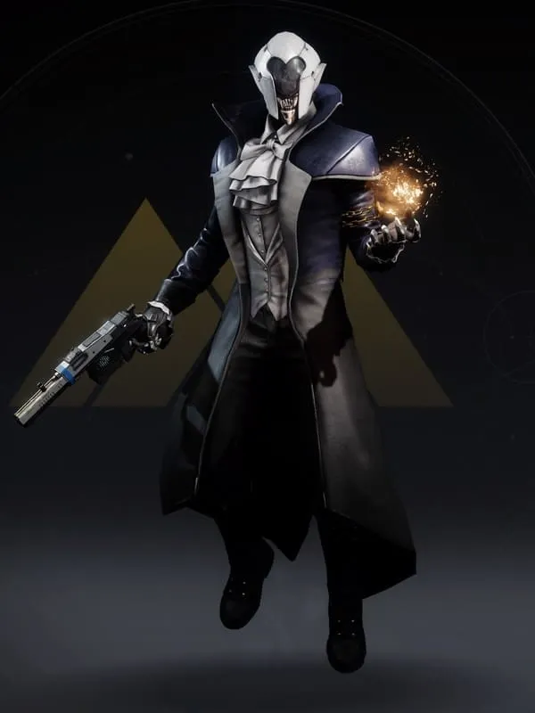

Warlocks
Warlocks are the mages of Destiny 2. Their focus is on ability spam - honing the travelers light and harnessing the powers of the universe.

Like all other classes, Warlocks have 5 subclasses. They are:
- Voidwalker - Void Subclass
- Dawnblade - Solar Subclass
- Stormcaller - Arc Subclass
- Broodweaver - Strand Subclass
- Prismatic Warlock - Prismatic Subclass
The kits of the subclasses of Warlocks is argueable the best right now. Because of sandbox changes, Warlocks have risen to the top of the meta and are currently dominating the game.
Some meta Warlock builds include:
- Getaway Artist Turret Build
- Nothing Manacles/Contraverse Hold Void Grenade Spam
- Inmost/Syntho/Winter's Guile Lightning Surge
- Threadling Spam Strand
- Boots of the Assembler
Back Home